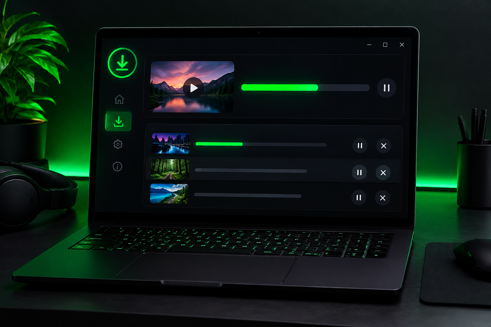
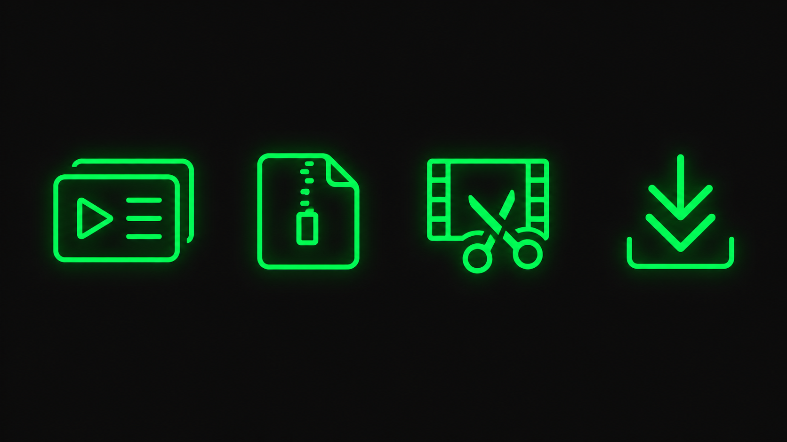

Playlists
Adicione uma playlist inteira e deixe os vídeos seguirem pela fila.
open-source · windows · sem enrolação
Um downloader de vídeos simples, sem anúncios, sem vírus e 100% open-source. Feito por um dev para a comunidade.
Baixar para WindowsGratuito · Windows 10/11 · código aberto

01 / por que existe
Cansado de sites cheios de pop-ups e botões falsos de download? Eu também. Por isso criei o Open Downloader.
03 / o que ele faz

Adicione uma playlist inteira e deixe os vídeos seguirem pela fila.
Ajuste o CRF e o preset do encoder para controlar qualidade e tamanho.
Marque o início e o fim do trecho. Exporte sem reencodar quando possível.
Acompanhe o progresso, pause e retome seus downloads em um só lugar.